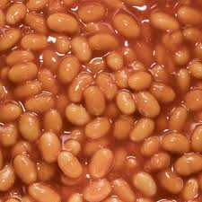

Serves 5
Heat the oil in a large pot. Add the garlic and onion (plus ham or bacon, if using) and cook, without browning, until the onion is soft and clear. Stir in the crushed chilies, bay leaves and thyme. Cook for one minute longer.
Add the canned tomatoes, beans and the stock. Heat until boiling, then add the pasta. Allow to boil gently until the pasta is cooked (usually 10-12 minutes), then add salt and black pepper to taste.
Serve topped with some chopped fresh parsley or basil (or a little pesto) and some freshly shaved or grated Parmesan.